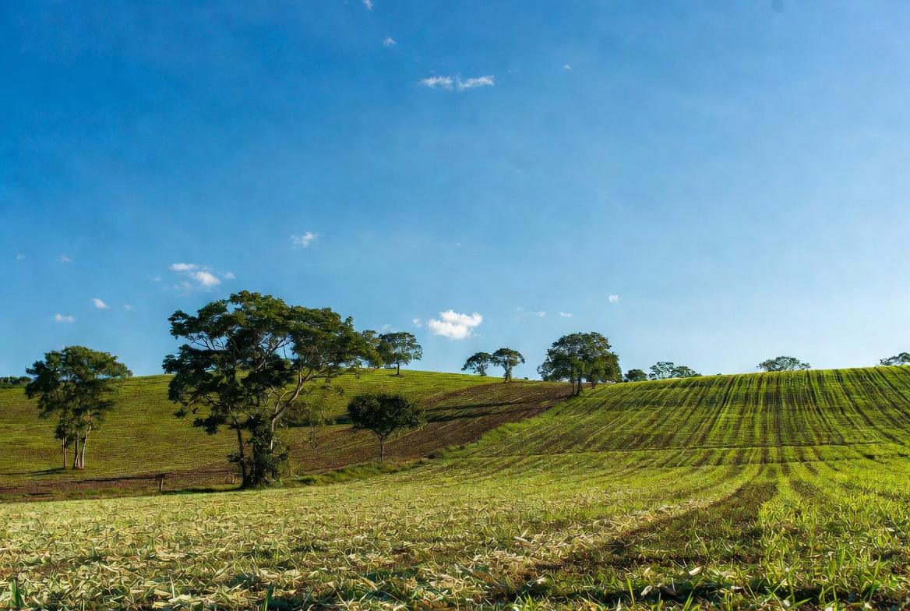
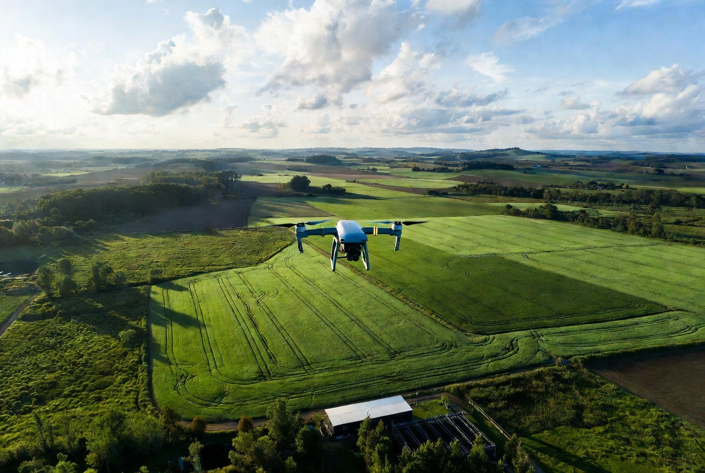

O Desafio do Século XXI

A agricultura moderna possui o desafio de alimentar uma população crescente
sem causar grandes impactos ambientais. A sustentabilidade busca unir produção,
tecnologia e preservação da natureza.
Um agro sustentável utiliza recursos naturais de maneira consciente,
protegendo o solo, a água e a biodiversidade para as futuras gerações.
Práticas para um Agro Sustentável

1. Plantio Direto
O plantio direto é uma técnica agrícola sustentável onde o solo não é revolvido
antes do plantio. O agricultor mantém restos vegetais sobre a terra,
formando uma proteção natural.
Essa cobertura ajuda a evitar a erosão causada pela chuva e pelo vento,
mantém a umidade do solo e preserva seus nutrientes.
Além disso, diminui a necessidade de irrigação e contribui para uma produção
agrícola mais eficiente e sustentável.
2. Rotação de Culturas
A rotação de culturas consiste em alternar diferentes tipos de plantas
cultivadas em uma mesma área durante diferentes épocas.
Essa prática evita o desgaste do solo, pois cada cultura possui necessidades
diferentes e pode contribuir para melhorar sua qualidade.
Ela também ajuda a reduzir pragas e doenças, diminuindo a necessidade do uso
excessivo de produtos químicos.
3. Tecnologia no Campo
A tecnologia auxilia agricultores por meio de ferramentas como drones,
sensores e sistemas inteligentes de análise de dados.
Esses recursos permitem acompanhar as plantações, identificar problemas
e controlar melhor o uso de água e fertilizantes.
Com isso, é possível aumentar a produtividade causando menos impactos
ao meio ambiente.